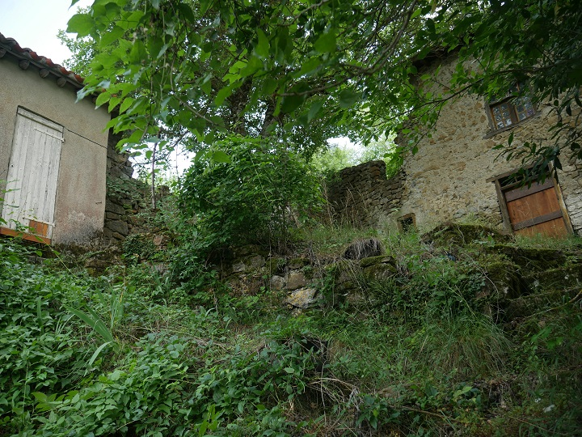

Les ruines du Chateau de Castelpor sont entre Marsa et Joucou, sur les hauteurs de la rive droite du Rébenty au hameau de Taffine (commune de Marsa), à l'arrière de ce rocher :

"Salut, je suis allé à Castelpor cet après-midi.

Pont sur le Rébenty depuis la RD 107 (ancienne voie de grande communication n°7) pour accéder au domaine de Massol et au hameau de Taffine

Passage du pont sur le Rébenty en direction de Massols et Taffine
"Pour y aller il faut passer par ce petit pont qui traverse le Rebenty. Ensuite il faut prendre la petite route étroite qui monte au domaine des Massols. Une fois en haut il y a un petit carrefour où il faut prendre à droite pour arriver à un petit hameau. À chaque fois que je dis que c'est petit, ce n'est pas une figure de style, j'ai eu du mal à croiser une voiture sur la route et je ne savais pas où me garer une fois au hameau.
Maisons du hameau de Taffine

Chemin vers joucou depuis le Hameau

Rocher soutenant le chateau, objet de la randonnée
"Une fois arrivé, j'ai vu que pour monter au rocher qui était en haut, il fallait passer par un jardin. J'ai toqué à la maison et je suis tombé sur un monsieur qui y faisait des travaux. Je lui ai donc expliqué ce que je faisais et il m'a autorisé à passer. Il m'a aussi dit qu'il y avait d'autres personnes qui y étaient passées et que tout le monde n'avait pas l'amabilité de demander. Il m'a aussi dit qu'un historien était venu et qu'il y avait trouvé des poteries.


Ruines du château de Castelpor
"Voici les ruines du château. J'ai pu y deviner les fondations éventuelles d'un donjon ou une tour carrée. Sinon rien d'exceptionnel, le propriétaire pense que les pierres ont servi à la construction du hameau en dessous. Si tu vas voir sur le site Marsa, tu peux voir le nom du hameau et apprendre qu'auparavant c'eût était un castrum.


Vue depuis le rocher de Castelpor
"Voici les vues depuis le haut du rocher. On peut notamment voir joucou la vallée du rebenty et même jusqu'à la pointe au fond qui est à Lapradelle, avec juste à gauche la montagne de Saint Martin (Planèze, le Clot, les Roumens). On voit aussi le hameau d'en dessous et le domaine des Massols.
Pour l'anecdote j'ai aussi croissé un beau cerf en haut.


Vue Quirbajou depuis le chemin vers Marsa
"Je suis aussi allé me promener par le chemin qui part à gauche de la route avant d'aller à Marsa. À force de monter j'ai pu avoir une vue sur Quirbajou et le chemin qu'on a pris pour y aller.
Les grands rochers sont ceux où il y avait les vautours et ceux un peu plus petits sont ceux avec la fameuse marque du baton de St Martin contre le diable."
Paul Teulière